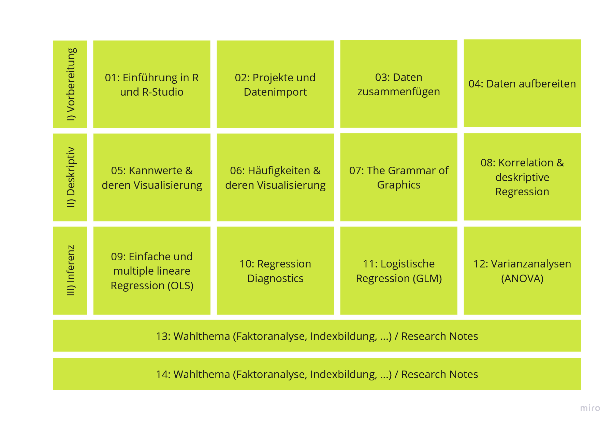
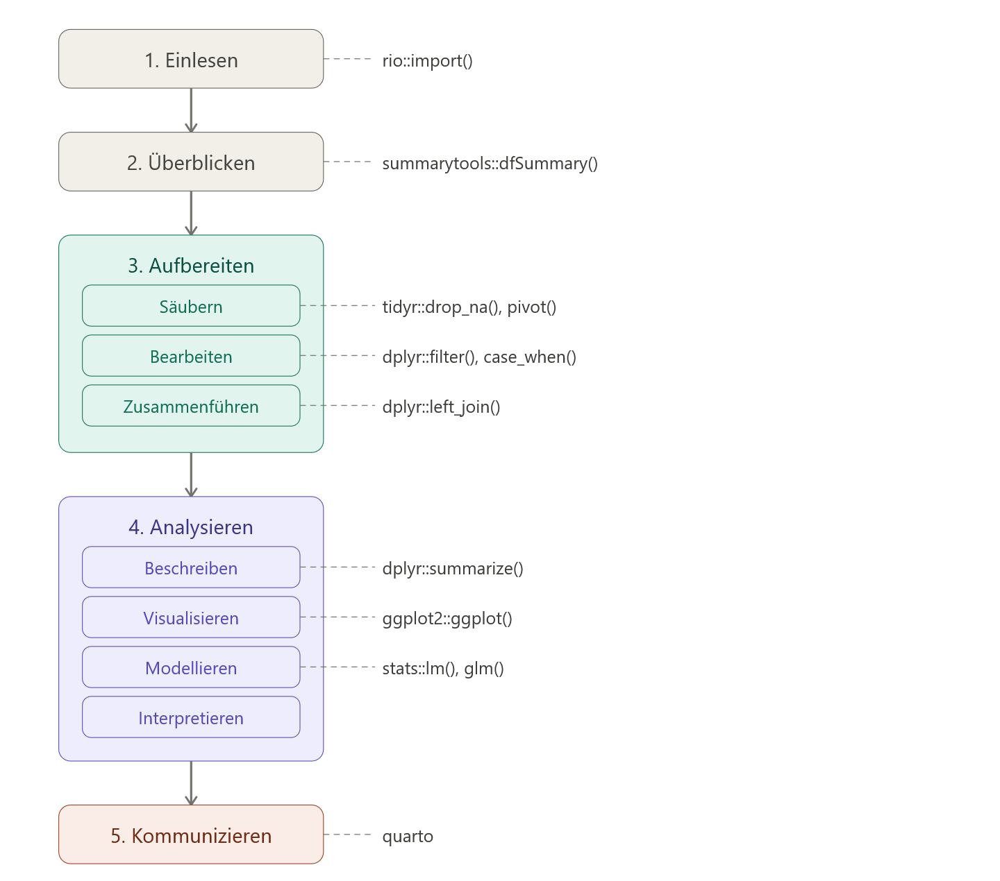
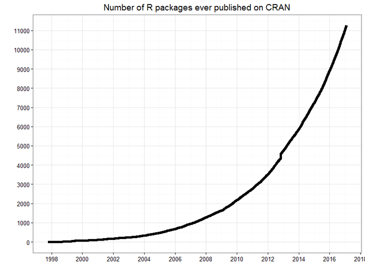
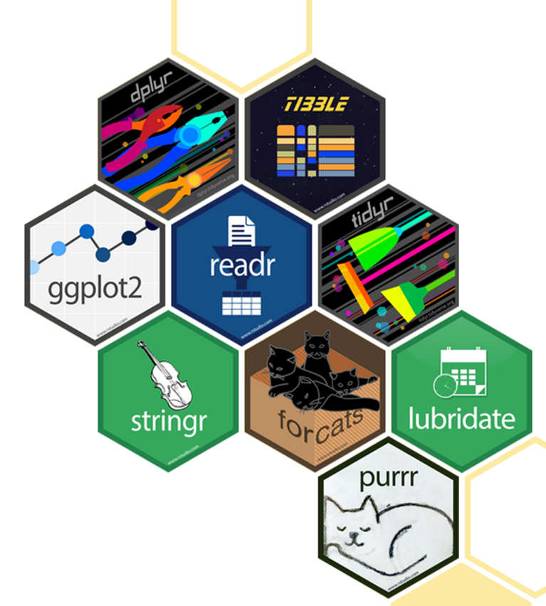
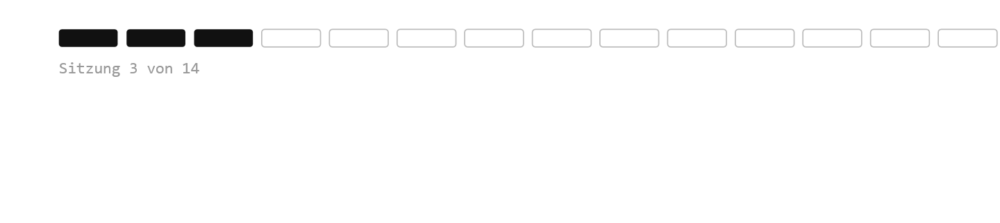
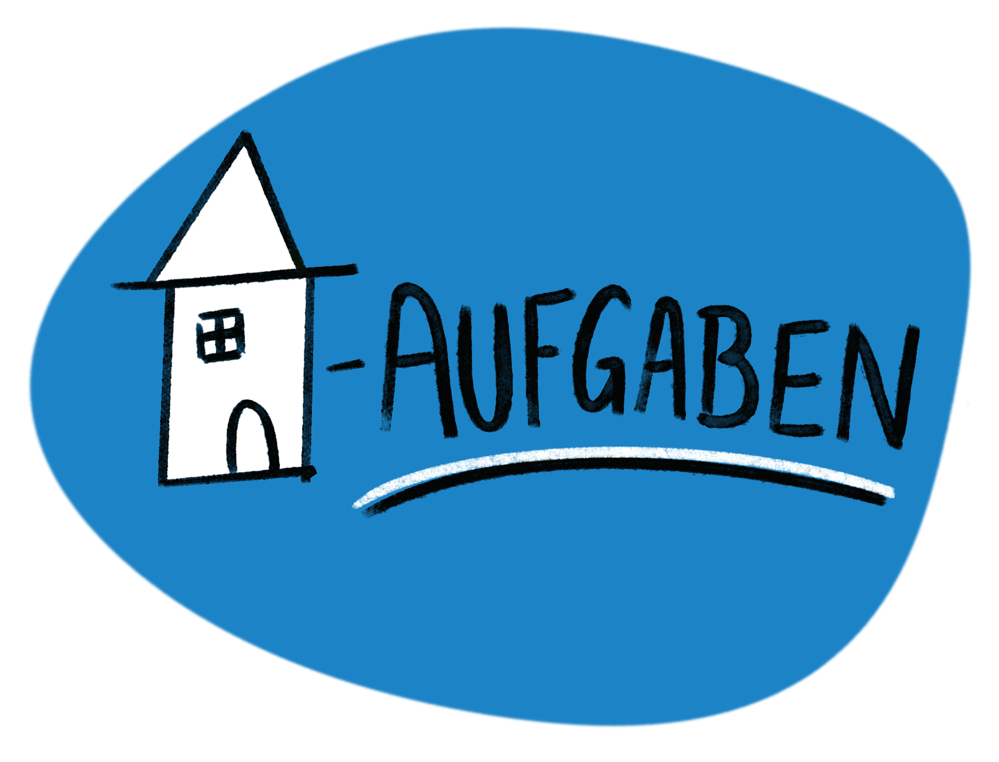

btw_2025_ergebnisse %>%
summarytools::dfSummary(na.col = FALSE) %>% # missings-Spalte ausblenden
summarytools::view(file = "./data/btw_2025_ergebnisse_uebersicht.html") # speichernQuantitative Methoden mit R & R-Studio
Sommersemester 2026 | Sitzung 3
Willkommen zurück!

Was heute ansteht:
- Check-In
- Besprechung der Übung 1
- Datensätze zusammenspielen
Recap
- Projektordner anlegen und darin arbeiten
- tidy code und tidy Kommentare schreiben
- Hilfe suchen
- Daten einlesen mit dem rio-Paket
- Daten überblicken mit dem summarytools-Paket
Datenanalyse-Workflow

Pakete
- Einige Funktionen sind bereits in base R enthalten
- Für andere müssen zusätzliche Pakete geladen werden
- Pakete sind Bündel unterschiedlicher Funktionen
- Base R reicht oft nur für sehr basale Operationen und Visualisierungen, für alles andere werden Pakete benötigt

summarytools-Paket
| Funktion | Beschreibung | Geeignet für |
|---|---|---|
dfSummary() |
Übersicht über alle Variablen (Klasse, fehlende Werte, Verteilungen, etc.) | Schnelle Gesamtübersicht eines Datensatzes |
freq() |
Häufigkeitstabellen | Einfache Verteilungen kategorialer Variablen |
descr() |
Deskriptive Statistik (Mittelwert, Median, SD, etc.) | Basisanalyse numerischer Variablen |
ctable() |
Kreuztabellen mit Prozenten und optionalen Tests (z. B. Chi²) | Zusammenhang zwischen zweikategorialen Variablen |
Das tidyverse-Paketbündel

Pipes
- Zwei Optionen: Base R pipe:
|>ODER magrittr pipe:%>% - Die Default-Pipe kann über Global Options eingestellt werden
- Zum Einfügen: eintippen oder
Strg + Shift + M - Stilregeln:
- Immer Leerzeichen vor der Pipe
- Immer neue Zeile danach
btw_2025_ergebnisse %>%
dplyr::filter(jahr == 2025) %>%
dplyr::select(partei, zweitstimmen)Datentransformation mit dplyr
| Befehl | Beschreibung | Bsp |
|---|---|---|
rename() |
Spaltennamen ändern | df %>% rename(neu = alt) |
select() |
Variablen auswählen | df %>% select(var1, var2) |
slice() |
Zeilen nach Position auswählen | df %>% slice(1:10) |
filter() |
Zeilen nach Werten filtern | df %>% filter(jahr == 2025) |
arrange() |
Zeilen sortieren | df %>% arrange(desc(stimmen)) |
relocate() |
Spaltenreihenfolge ändern | df %>% relocate(var1, .before = var2) |
Datentransformation mit mit dplyr
| Befehl | Beschreibung | Bsp |
|---|---|---|
mutate() |
Neue Variablen hinzufügen | df %>% mutate(anteil = stimmen / sum(stimmen)) |
summarise() |
Mehrere Werte zusammenfassen | df %>% summarise(mean(stimmen)) |
count() |
Häufigkeiten zählen | df %>% count(partei) |
group_by() |
Operationen gruppenweise ausführen | df %>% group_by(partei) %>% summarise(mean(stimmen)) |
Datentransformation mit mit tidyr
| Befehl | Beschreibung | Bsp |
|---|---|---|
pivot_longer() |
Breites Format in langes umwandeln | df %>% pivot_longer(cols = -id, names_to = "var", values_to = "val") |
pivot_wider() |
Langes Format in breites umwandeln | df %>% pivot_wider(names_from = var, values_from = val) |
drop_na() |
Zeilen mit fehlenden Werten entfernen | df %>% drop_na(var1) |
Hands On - Daten mergen
Variablen & Skalenniveaus
Die abhängige Variable (AV) ist diejenige Variable, deren Veränderung im Zusammenhang mit einer oder mehrerer unabhängiger Variablen (UV) gemessen wird.
Bsp.:
Konzentrationsfähigkeit der Studierenden Temperatur im Raum
Leistung des Dozenten Anwesenheit der Studierenden im Seminar?
Homeoffice Arbeitsmotivation der Mitarbeiter*innen
Variablen und Skalenniveaus
| Skalenniveau | Variablentyp | Mögliche Aussagen | Beispiel(e) | Operationen |
|---|---|---|---|---|
| Nominal | Kategorial | Gleichheit / Verschiedenheit | Diagnosen, Religion | \(=, \neq\) |
| Ordinal | Kategorial | Rangfolge | Schulabschlüsse | \(=, \neq, <, >\) |
| Intervall | Metrisch | Abstände | Temperatur (°C), IQ | \(+, -\) |
| Verhältnis | Metrisch | Verhältnisse | Einkommen, Alter | \(*, /\) |
Minute Cards
Bitte füllt die Minute Cards für die heutige Sitzung aus. Das sollt enicht länger als 3 Minuten dauern. Vielen Dank für eure Mitarbeit!
Warning: Paket 'qrcode' wurde unter R Version 4.5.3 erstellt
Vielen Dank und bis kommenden Dienstag!


Übung 2 zu “Data merging” bis spätestens Sonntagabend!
:::::::